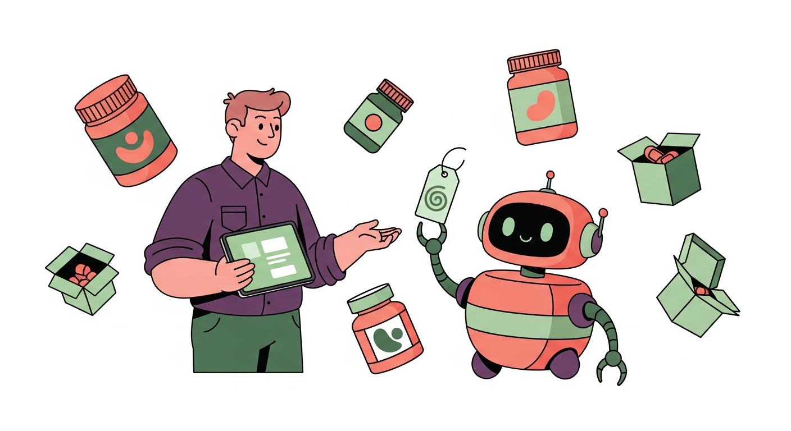
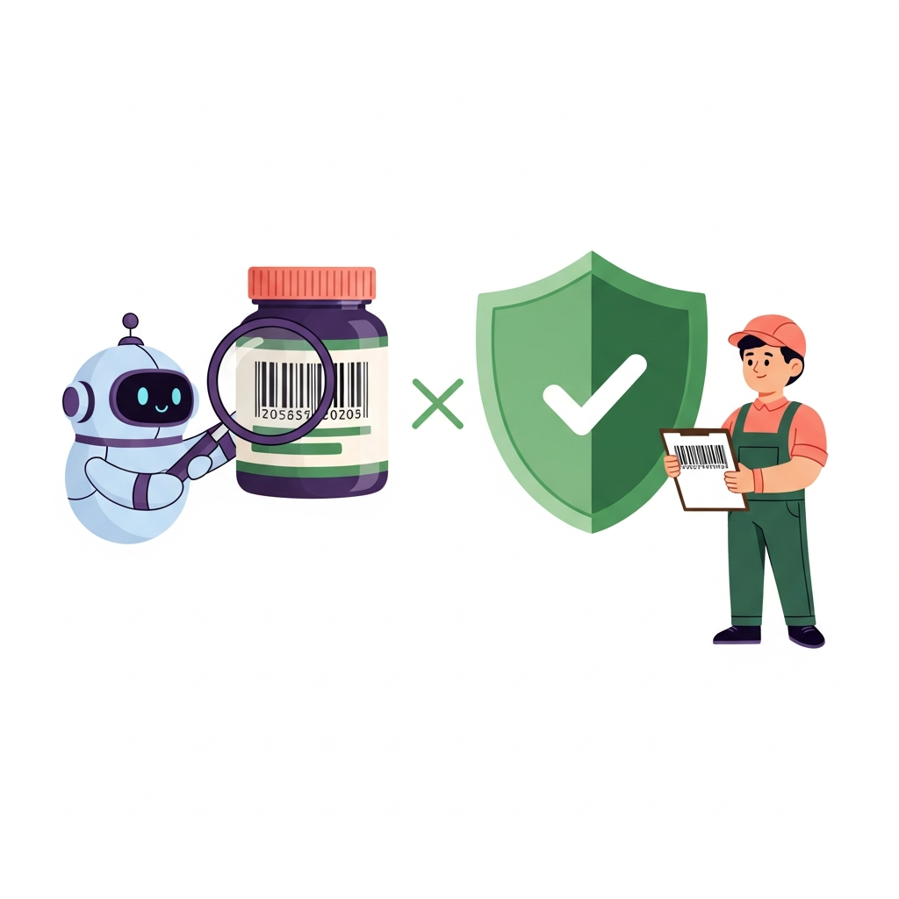
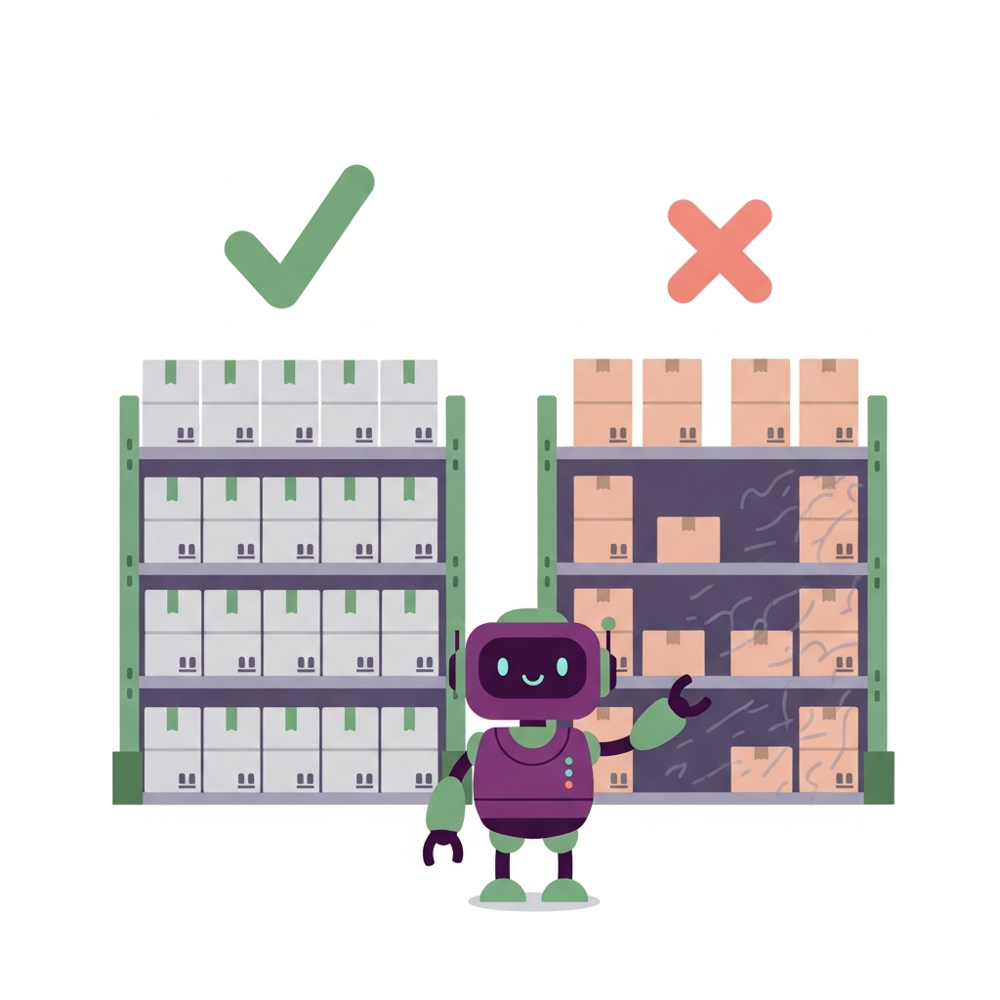

PriceMart AI now knows what every product costs us at our two dropship suppliers, refreshed twice a week, and tells you which products are priced too low. You just ask it in plain language. This page explains what it does, how it protects you from bad data, and what to ask.

Every Monday and Thursday morning the system captures both dropship suppliers' full catalogues: our wholesale cost, whether each product is in stock, and how many units the supplier holds. It compares that with our current selling prices.
A price recommendation is only as good as the cost behind it. Every product must pass both checks before it appears on your list.

The barcode match is confirmed against our own catalogue's supplier list. A product only counts if we genuinely buy it from that supplier. Lookalike barcodes and products we source elsewhere are filtered out automatically.

The cost used is always from a supplier that has the product in stock right now. A cheap price on an empty shelf is not a real price. If neither supplier has stock, the product is left off the repricing list.
What the list looks like. Current price, the supplier we would buy from and their stock, the margin we are making now, and the new minimum price.
| Product | Price now (incl VAT) | Source (in stock) | Cost | Margin now | New min price |
|---|---|---|---|---|---|
| Protein Powder 2 kg, Chocolate | 24,00 € | Supplier A · 50 pcs | 26,00 € | -35,4% | 54,17 € |
| Shaker Bottle 700 ml | 7,50 € | Supplier B · 100 pcs | 7,80 € | -30,0% | 16,25 € |
| Multivitamin 120 caps | 32,50 € | Supplier B · 10 pcs | 24,70 € | -5,0% | 51,46 € |
| Whey Isolate 900 g, Vanilla | 45,00 € | Supplier A · 46 pcs | 31,68 € | 12,0% | 66,00 € |
| Pre-Workout 50 serv, Citrus | 30,00 € | Supplier A · 223 pcs | 20,40 € | 15,0% | 42,50 € |
Products and numbers above are illustrative examples. The real list, with live costs and margins, lives inside PriceMart AI. The first three example rows show products selling below what they cost us.